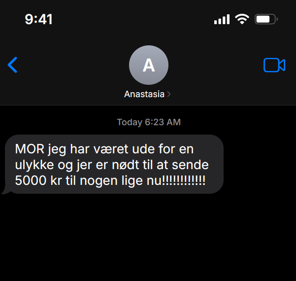
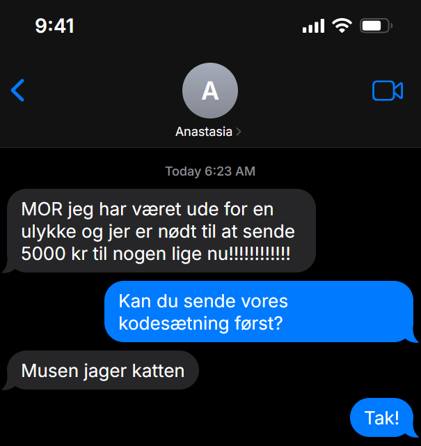

Beskyt dig selv mod AI-stemmesvindel med sikkerhedssætninger
Digital svindel udvikler sig hele tiden. Et af de seneste typer, efterligner dine kæres, eller kendtes stemmer, og prøver at ophave penge fra dig.
Her kan du lærer hvordan du kan nemt og hurtigt beskydte dig og dine nermeste med sikkerheds sætninger.
Sådan kan nogle af de mest normale AI-stemmesvindeler se ud. Hold øje med disse kende tægn.
- De kan ringe til dig og lyde præcis som dit barn, en ven, osv.
- Beskeden kan være f.eks.: “Jeg har været ude for en ulykke og har brug for penge nu!”
- Du kan få en talebesked fra et ukendt nummer: “Jeg har mistet min telefon og har brug for [...]!”
- De presser altid på tiden, så du ikke når at tænke dig om.
- Beskederne eller opkaldene kan komme fra personens rigtige nummer i nogle tildfælde.


Hvordan en privat sikkerheds sætning kan holde dig og dine kære sikre.
- En sikkerhedssætning er en hemmelig sætning, som kun du og din familie kender.
- Svindleren kan efterligne stemmen, men kan ikke kende jeres sætning.
- Bed om sætningen, hvis du får et mistænkeligt opkald, og læg på, hvis personen ikke kan sige den.
- Vælg noget, der er nemt at huske, men svært at gætte, fx “Katten Spidser Snoren”
- Del den aldrig på nettet eller til unkendte.